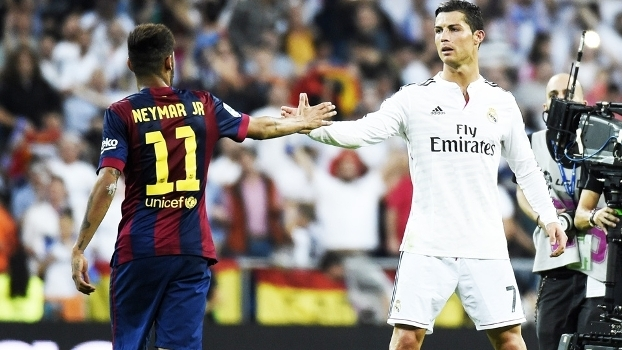

Nesta página, vamos falar sobre a amizade incrível entre Neymar e Cristiano Ronaldo.
Neymar e Cristiano Ronaldo compartilham uma amizade única que vai além do campo de jogo.
Os dois astros do futebol, conhecidos por sua habilidade excepcional, têm uma relação de respeito mútuo e admiração.
Amigos fora das quatro linhas, Neymar e CR7 frequentemente interagem em eventos esportivos e nas redes sociais, mostrando o lado descontraído e amigável de suas personalidades.
Esta amizade é um exemplo de como o esporte pode unir pessoas de diferentes origens e fortalecer laços duradouros.